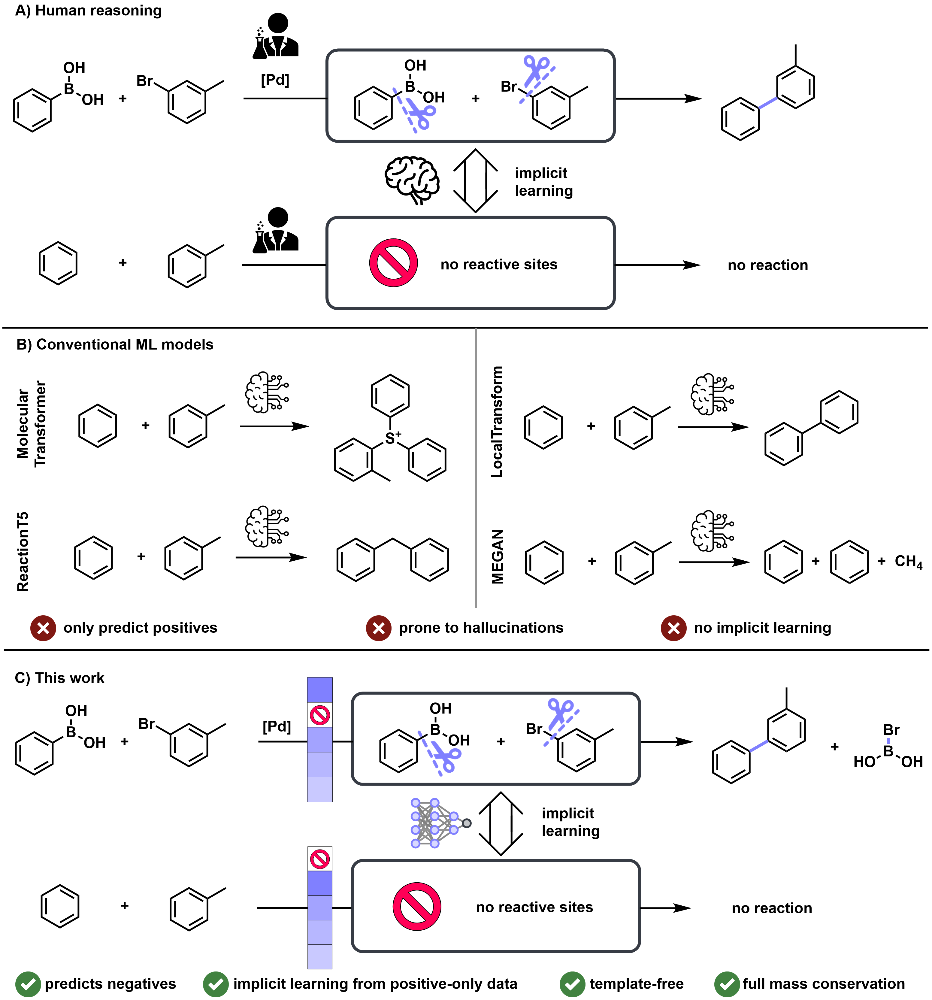
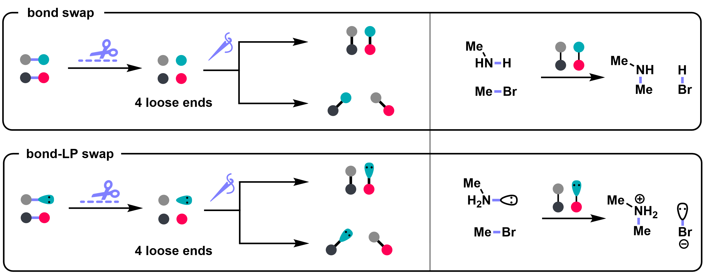
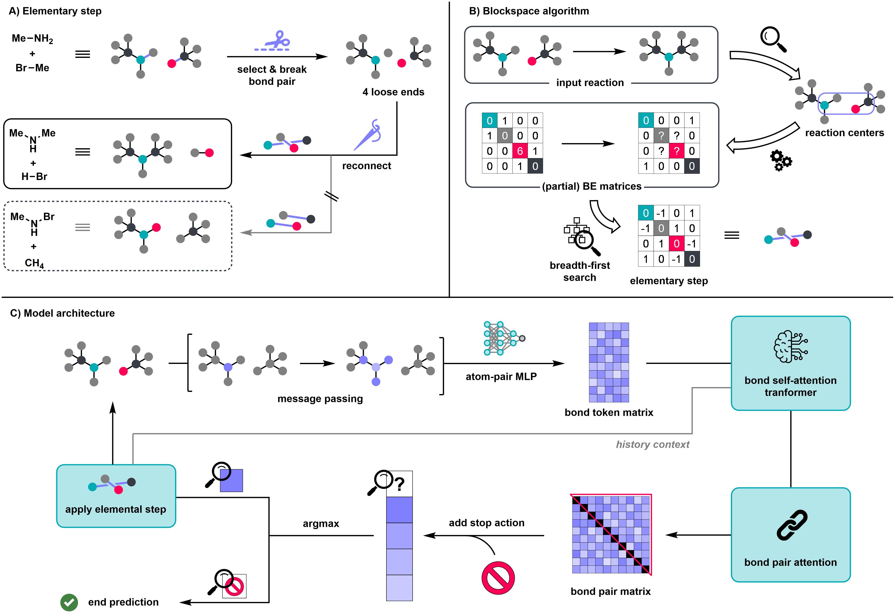
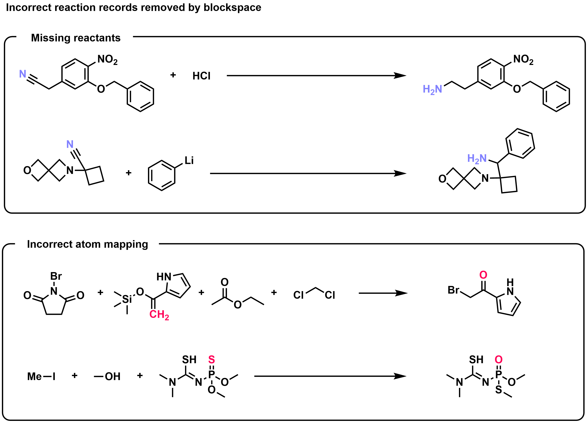
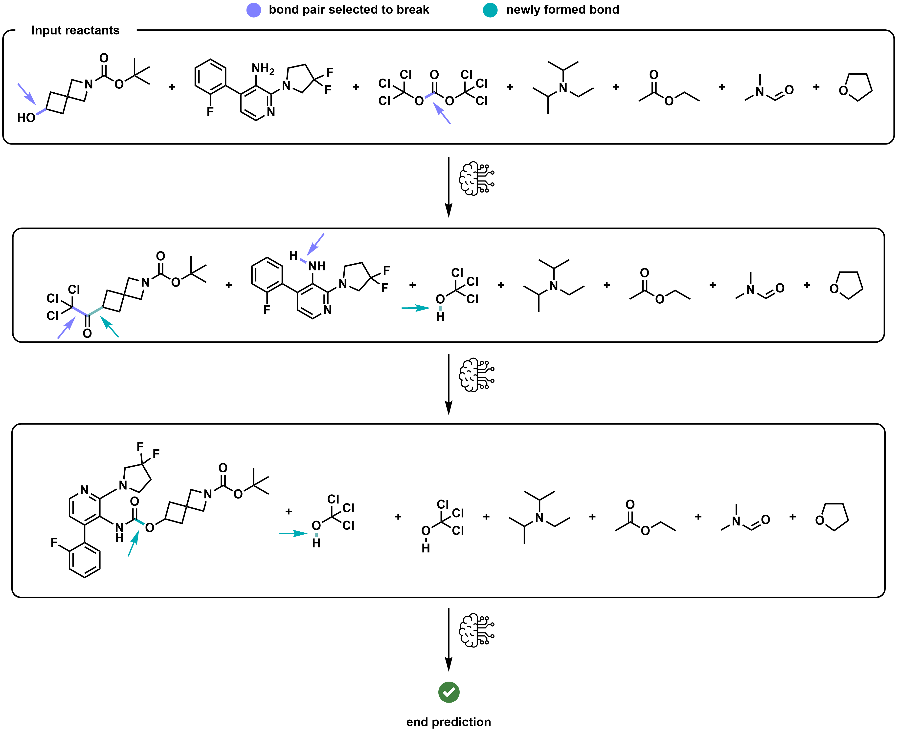

TAckling Chemistry through ImpliciT negative learning
Organisch-Chemisches-Institut, Universität Münster, 48149 Münster, Germany
* These authors contributed equally. · † Corresponding author.

Machine learning models for reaction product prediction have largely been trained and evaluated on datasets of successful reactions. While this setting allows reaching high accuracy scores, these models generally struggle to discriminate between successful and unsuccessful transformations due to the lack of negative training data. This critically limits their practical use, as reliably recognizing unproductive substrate combinations in silico is required to accelerate experimental campaigns and save resources in the laboratory.
While the availability of negative reaction data remains limited to date, we show that even purely positive datasets implicitly contain a significant amount of information about cases in which no reaction occurs. To exploit this, we introduce TACIT (TAckling Chemistry through ImpliciT negative learning). While trained on positive-only data, TACIT learns to distinguish between productive and unproductive transformations. On two published high-throughput experimentation datasets, it outperforms all evaluated reaction outcome prediction models in separating successful from failed reactions.
Crucially, TACIT’s accuracy on the popular USPTO-MIT benchmark remains competitive, despite its added ability to predict negative reaction outcomes.
TACIT, trained on the blockspace-filtered USPTO-MIT training set and evaluated on the full, unfiltered test sets.
Trained on positive reactions only, TACIT separates successful from failed reactions better than all evaluated reaction outcome prediction models on both HTE datasets, while its top-1 accuracy on USPTO-MIT remains competitive.
A reaction is decomposed into elementary steps. In each step two bonds break and two new bonds form — a bond swap — while electrons and atoms are conserved. The model ranks candidate bond pairs against a learned stop action, predicting both what reacts and whether anything reacts at all.



TACIT applies one elementary step at a time, feeding each predicted intermediate back as input, so arbitrarily complex reactions are covered by iteration. TACIT is not designed or trained to predict reaction mechanisms: the shortest-step decomposition does not necessarily match the true chemical mechanism.

@article{tacit,
title = {Implicit Learning: Reaction Outcome Prediction from Positive-Only Data},
author = {Wierich, Nick and Dobberstein, Niklas and Glorius, Frank},
year = {2026},
note = {TACIT: TAckling Chemistry through ImpliciT negative learning}
}